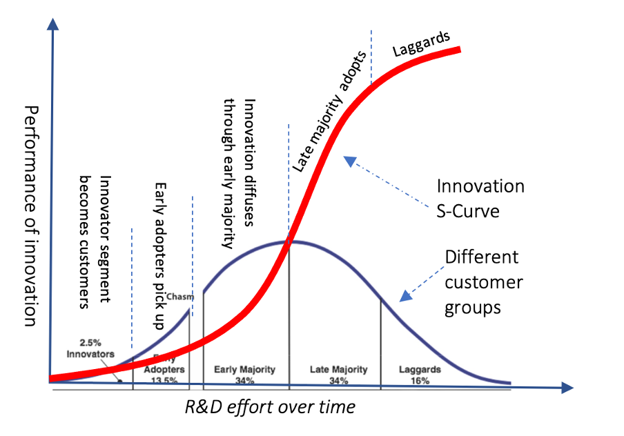

MGMT 457 W: Strategic Management of Innovation and Technology
Technological and Consumer S Curve
Kate Wang
Story of Refrigerator
Godrej & Boyce - A household appliance company serving the India Market
The Challenge:
Godrej & Boyce faced significant barriers entering the rural Indian market:
- Price barrier: 90% of rural families could not afford conventional refrigerators
- Infrastructure gap: Unreliable electricity made standard appliances impractical
- Market paradox: Massive untapped demand, but existing products were fundamentally incompatible with rural conditions
How could they serve this market with their current technology?
Strategy A:Compact fridge
Reduce the cost of a conventional compressor-based refrigerator

What is Compression Refrigeration?
- Vapor-compression cycle: Uses refrigerant gas compressed and expanded to absorb/release heat
- Key components: Compressor motor, condenser, evaporator, and refrigerant fluid
- High cooling efficiency: Proven technology used in most household refrigerators worldwide
Strategy A Approach:
- Cost reduction: Smaller size, simplified features, cheaper materials
- Incremental innovation: Optimize existing mature technology rather than reinvent it
- Challenge: Still requires reliable electricity and may remain too expensive for rural market
Strategy B: Thermoelectric fridge
Small and portable refrigerator based on thermoelectric cooling

What is Thermoelectric Cooling?
- Peltier Effect: Uses electrical current to transfer heat between two materials
- No moving parts: Solid-state technology with no compressor or refrigerant
- Lower power consumption: Can run on battery or solar power
Key Differences from Traditional Compression Fridges:
- Simpler design: Fewer components = lower manufacturing cost & easier maintenance
- Quieter operation: No noisy compressor motor
- More flexible power: Works with intermittent electricity or alternative energy sources
- Trade-off: Less cooling power, but sufficient for basic food preservation needs
Strategy Tool: Technology S Curve

Strategy Tool: Consumer Adoption S Curve

Where are Strategy A and B on the Technology S Curve and Consumer S Curve?
Analysis Summary
Strategy A: Compact Fridge
Technology S Curve:
- Mature technology - compressor-based cooling
- Focus on cost optimization
- Incremental improvements
Consumer Adoption:
- Familiar technology
- Lower adoption barriers
- Targets mainstream market
Strategy B: Thermoelectric Fridge
Technology S Curve:
- Emerging technology - thermoelectric cooling
- Higher development potential
- Disruptive innovation
Consumer Adoption:
- New technology paradigm
- Early adopter market
- Higher adoption barriers initially
Group Discussion
What are the following technologies located on Technology S Curve and Consumer S Curve?
Group 1: Generative AI (Large Language Models like ChatGPT, GPT-4, Claude)

Group 2: Electric Vehicles (EVs)

Draw on the Board
Please draw your understanding of the technology S curve and consumer adoption S curve for your group technology discussion on the white board
Key Takeaways
🎯 Strategic Insights:
- Technology S Curve helps identify where technologies are in their development lifecycle
- Consumer Adoption S Curve reveals market readiness and adoption patterns
- Different strategies suit different positions on these curves
💡 Business Applications:
- Incremental innovation (Strategy A) works well with mature technologies
- Disruptive innovation (Strategy B) leverages emerging technologies
- Understanding both curves is crucial for strategic decision-making
🚀 Remember:
The right strategy depends on where you are on both the Technology and Consumer Adoption S Curves!
Simulation: Should IBM develop more Software or Cloud Services?

Simulation Instructions
Start 3:10 pm and submit 4:40 pm
- https://bcs.statherian.com
- Sign up
- Grab the information file for your role
- Discuss within your team to make decisions
- Submit your answers
- 30 minutes